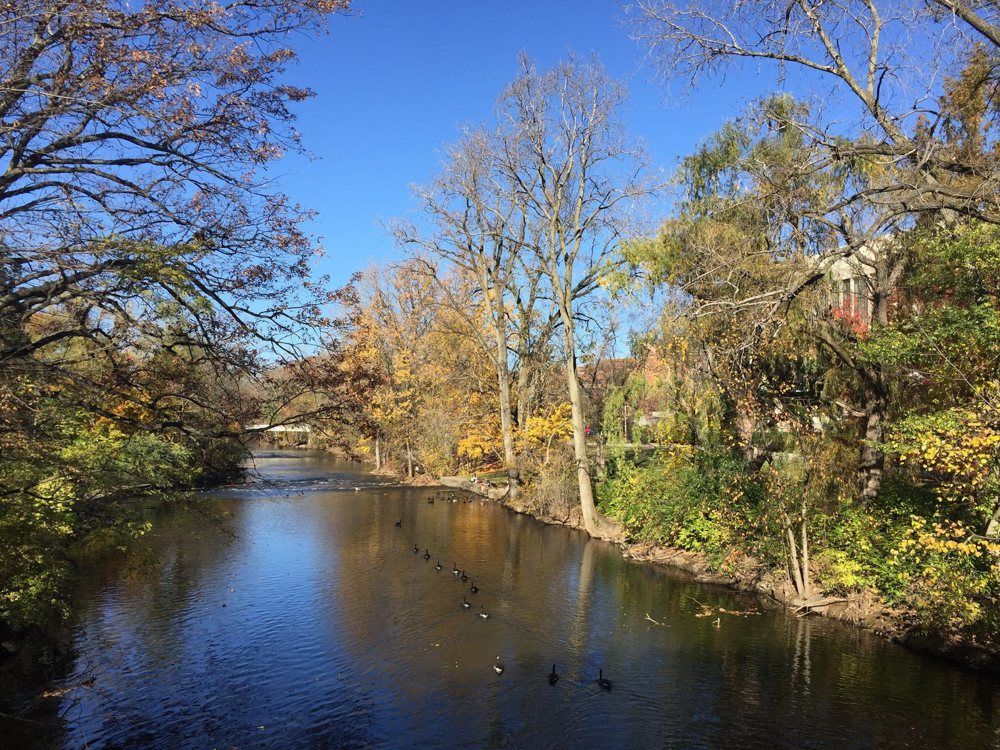
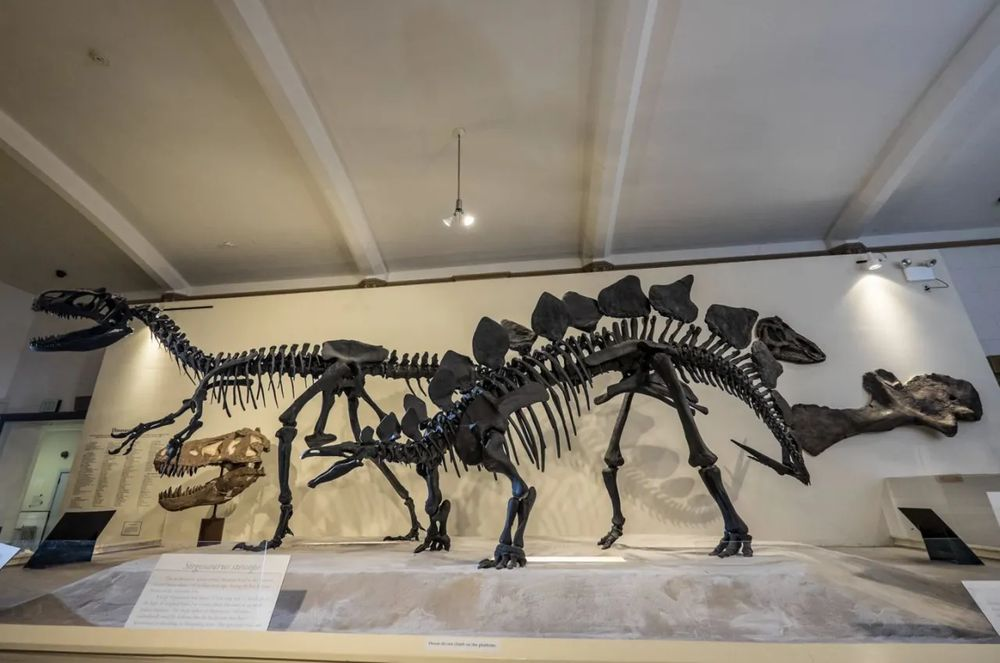
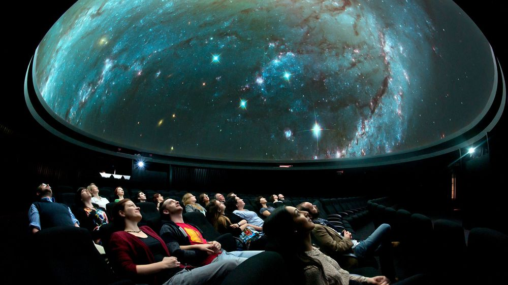

The venue

The Kellogg Hotel & Conference Center places the meeting rooms, guest rooms, and dining of the conference in one building on campus. It offers more than 35,000 square feet of event space, 32 meeting and banquet rooms, and 160 guest rooms and suites. Wi-Fi is free throughout the building, and the center has an on-site audio-visual team and covered parking.
The State Room Restaurant inside the center is staffed through the MSU School of Hospitality Business. The center also offers accessible guest rooms and meeting spaces. Attendees who need specific accommodations can contact the Kellogg Center Sales & Event Office in advance.
Getting to East Lansing
| Route | Time to campus | Notes |
|---|---|---|
| Lansing (LAN) | 15–20 min by car | Capital Region International Airport, the closest airport. American and United fly nonstop from Chicago O'Hare, and Delta flies nonstop from Detroit. |
| Detroit (DTW) | About 75 min by car | Detroit Metropolitan Airport, a major hub and the main gateway for international attendees. |
| Michigan Flyer | About 2 hours | Michigan Flyer motorcoach service between Detroit Metropolitan Airport and East Lansing, with several round trips a day. Check the current schedule before travel. |
By car, East Lansing lies at the junction of I-96, I-69, and US-127, within a half-day drive of Chicago, Detroit, Toronto, Indianapolis, and Cleveland.
Where to stay
- Kellogg Hotel & Conference Center: on site, with 160 guest rooms and suites
- East Lansing Marriott at University Place: about 0.7 miles from the venue, near a Michigan Flyer stop
- SpringHill Suites East Lansing University Area: about 1 mile from the venue
Information about a conference room rate will be posted here.
Around campus
The venue is a short walk from downtown East Lansing, with its restaurants and shops, and from the trails along the Red Cedar River.
- Broad Art Museum: designed by Zaha Hadid, with free general admission
- MSU Museum: a Smithsonian Affiliate, reopened in January 2026 after a full renovation
- Abrams Planetarium: a 141-seat theater; group visits should be booked about one week ahead
- MSU River Trail: a trail along the Red Cedar River through campus (trail map)
- Downtown East Lansing: restaurants, cafés, and shops next to campus
- W. J. Beal Botanical Garden: established in 1873, the oldest continuously operated university botanical garden in the United States




